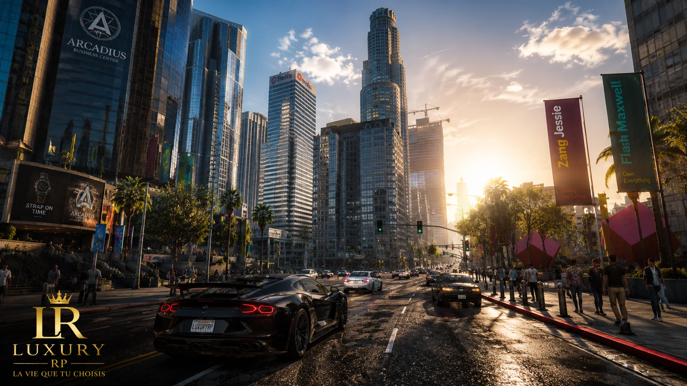
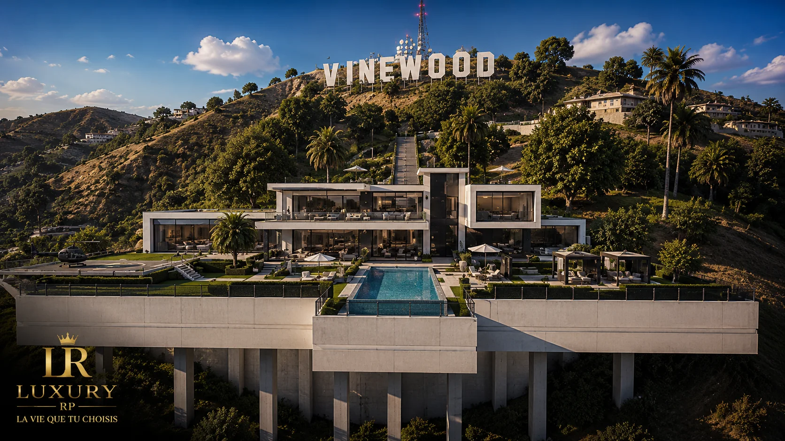
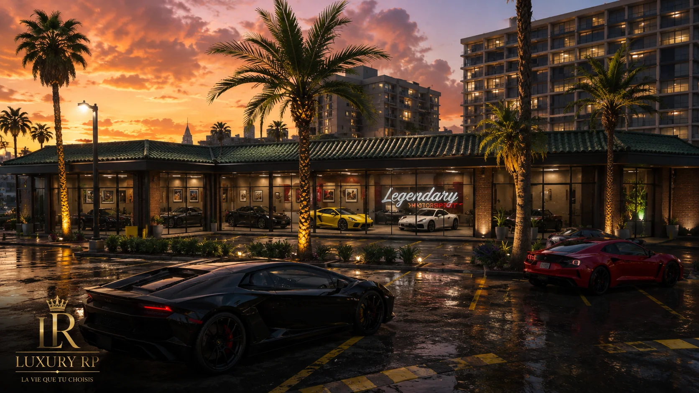
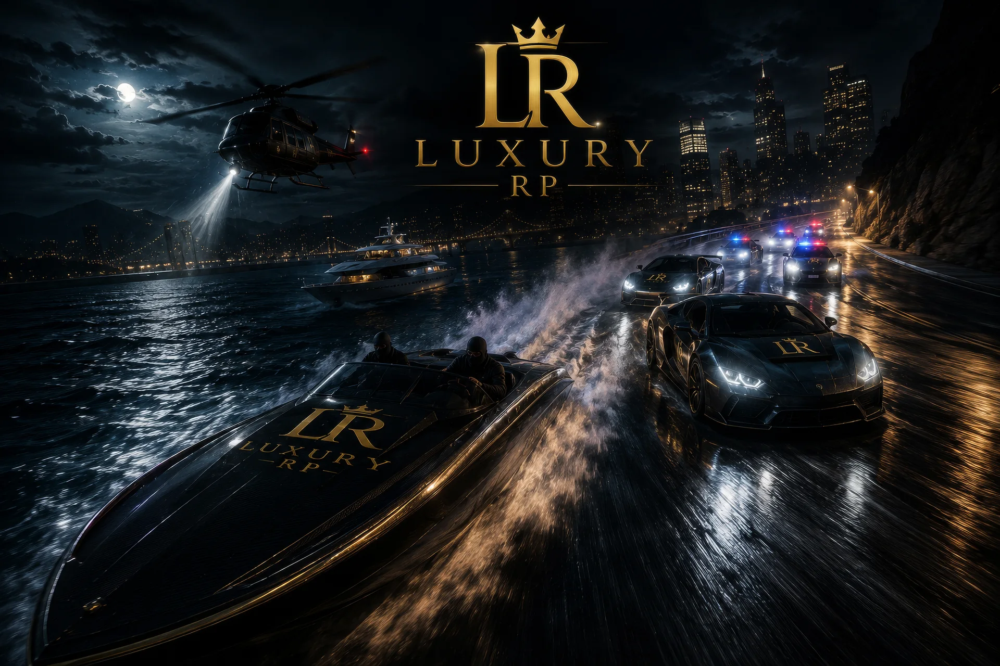
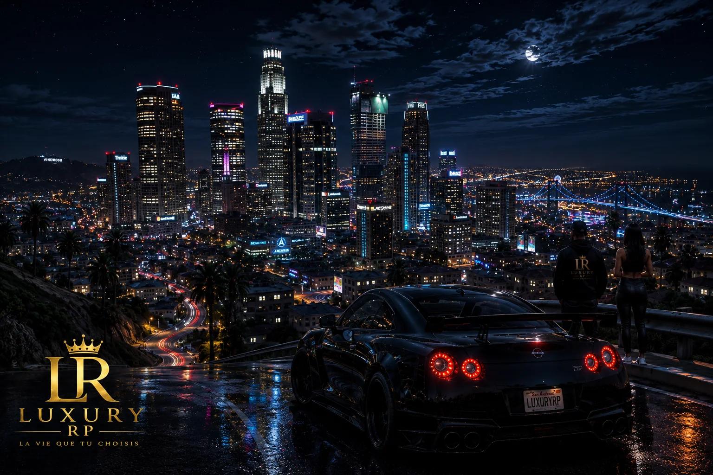
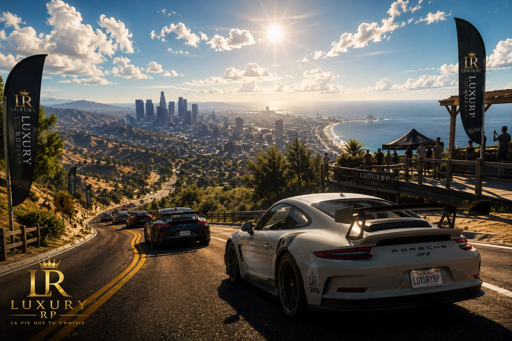
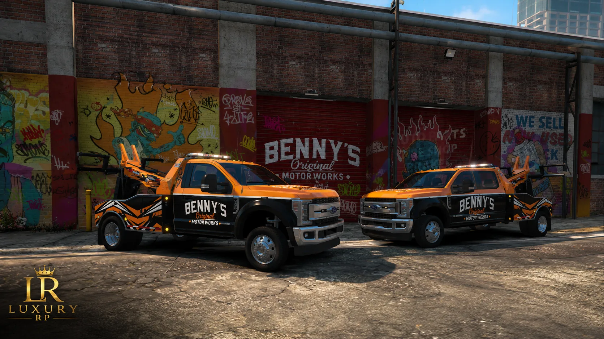
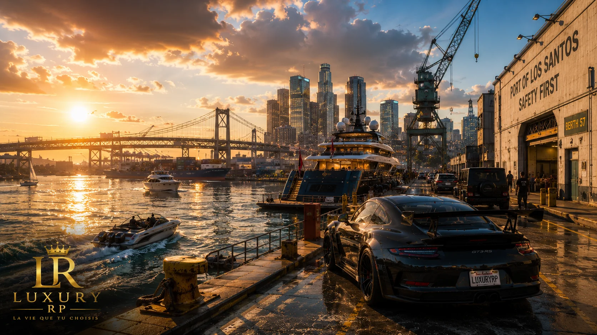
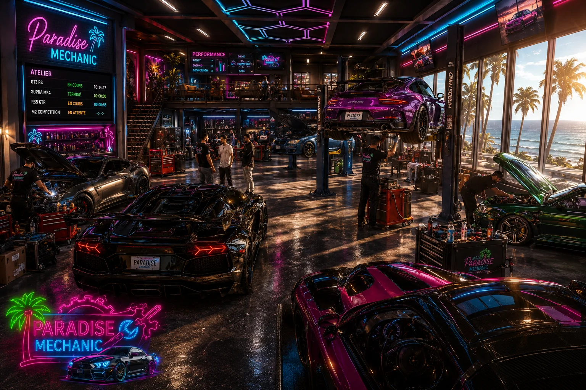
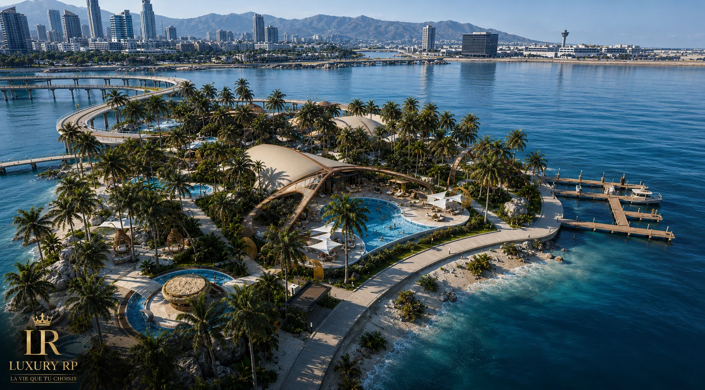

Nouveau joueur
Commencez par le guide d’arrivée : Discord, règlement, création de personnage, premiers repères et bonnes pratiques pour entrer dans l’univers sans perdre de temps.
Luxury RP réunit, dans un portail clair et premium, tout ce qu’un joueur doit connaître pour rejoindre la ville, suivre son actualité et retrouver ses accès utiles au quotidien.

Explore Los Santos & Blaine County. Quartiers, lieux d’intérêt, services et secrets à découvrir.
Découvrir →
Vivez des expériences uniques. Courses, événements, activités et animations immersives.
Découvrir →
Créez, gérez et développez votre entreprise dans un monde en constante évolution.
Découvrir →
Trafics, organisations et territoires. Choisissez votre chemin, mais attention aux conséquences.
Découvrir →
Gérez votre personnage, vos finances, vos véhicules et bien plus depuis votre espace personnel.
Accéder →
Revivez les meilleurs moments. Photos, vidéos, bandes-annonces et créations de la communauté.
Découvrir →
Ouvrez le MDT Luxury RP et consultez la ville depuis une interface dédiée.
Découvrir →NouveauLe site oriente les nouveaux arrivants vers les bons repères, tout en restant un support secondaire utile pour les joueurs déjà installés dans Luxury RP.
Commencez par le guide d’arrivée : Discord, règlement, création de personnage, premiers repères et bonnes pratiques pour entrer dans l’univers sans perdre de temps.
Utilisez le site comme un hub secondaire : carte interactive, sociétés, recrutements, actualités et support restent accessibles en quelques clics.
Les mises à jour, ajustements et évolutions du serveur sont regroupés dans un changelog clair pour garder une lecture propre du projet.

L’accueil gagne en rythme éditorial, en lisibilité et en présence visuelle premium.
Exposition de véhicules rares, rencontres et culture automobile.

De nouvelles opportunités s’ouvrent pour construire votre histoire.
Une sélection de rôles incarnés, visibles et immédiatement lisibles pour aider de nouveaux profils à trouver leur place en ville.
Profils fiables, investis et capables de faire vivre enquêtes, patrouilles, interventions et présence terrain.
Ouvert Voir la fiche →Joueurs patients et cohérents, orientés secours, scènes médicales, suivi citoyen et coordination en ville.
Ouvert Voir les EMS →Journalistes, photographes, reporters et animateurs capables de couvrir l’actualité et de créer du contenu vivant.
Ouvert Voir la fiche →Profils commerciaux, conseillers RP et passionnés d’automobile premium autour du véhicule d’exception.
À confirmer Voir la fiche →Vision, guide d’arrivée, règlement et actualités : les accès essentiels sont rassemblés ici pour offrir un portail plus clair, plus utile et plus cohérent.
Comprendre l’ambition du serveur, son positionnement et la direction donnée à l’expérience de jeu.
Lire la vision → 02Discord, whitelist, personnage, premiers repères et méthode claire pour entrer en ville dans de bonnes conditions.
Commencer → 03Les principes clés pour protéger l’immersion, garder un cadre sain et assurer un RP propre pour tous.
Lire les règles → 04Versions, évolutions, mises à jour officielles et lecture claire de la progression du projet Luxury RP.
Voir le changelog →Une ville contrastée : quartiers iconiques, plages, routes de nuit, lieux sociaux, business, services publics et zones plus secrètes.


Rassemblements, clubs, garages, hôtels, routes, événements et scènes RP : Luxury RP est pensé pour créer des moments mémorables.


Chaque entité possède sa fiche dédiée, son ambiance visuelle, ses activités et ses possibilités de recrutement.
Explorer l’écosystèmeCourses de nuit, go-fast, poursuites, hélicos, routes mouillées et tensions organisées. L’action reste lisible, intense et cinématographique.
Suivi joueurs, permissions, entreprises, logs, synchronisation Discord, tickets, historique staff et monitoring serveur dans une interface pensée comme un véritable centre de commande.
Une galerie immersive pour parcourir la ville, ses lieux signatures, ses métiers, ses scènes marquantes et l’atmosphère propre à Luxury RP.